Mengantarkan Anda
Untuk Menemukan :
Untuk Menemukan :
Penerapan Teknologi
Fakta umum penerapan teknologi di lingkungan pemerintahan.



Kota (Beneran) Pintar

Para
Pembaca
Kota
(Beneran) Pintar

Pertanyaan yang jawabannya harus kembali digali karena nyatanya, “pintar” yang digemborkan-gemborkan masih sekadar bentuk lain dari euforia adaptasi teknologi. Belum sepenuhnya masuk ke ranah kebermanfaatan dari penerapan teknologinya sendiri, apalagi soal interoperabilitas sistem dan hasil datanya.
Sayangnya, kebanyakan daerah masih belum mengerti bahwa taraf kegagalan mewujudkan Smart City bukan hanya karena gagalnya proyek teknologi di tengah jalan. Itu memang masuk dalam unsur kegagalannya, tapi lebih dari itu, gagal juga harus diukur dari segi waktu, biaya, dan tenaga. Ibarat kata, sudah gagal, total pula.
Kota
(Beneran) Pintar
Seputar
Kota (Beneran) Pintar